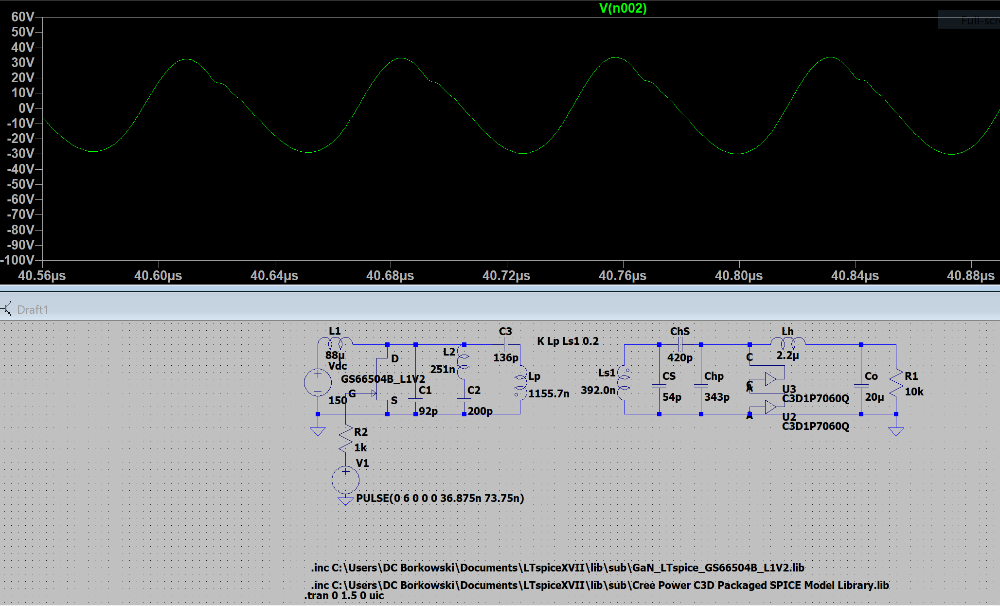
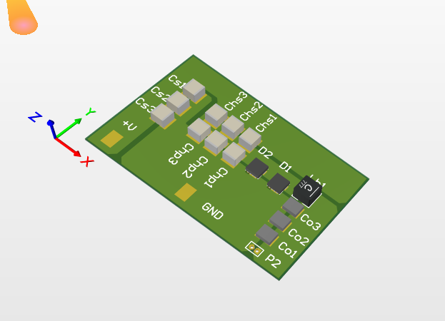

I worked on a team of 3 undergraduates lead by PhD student Alireza Dayerizadeh in building a wirelessly powered drone. We worked to recreate this design from a paper by J. M. Arteaga, et. al. Over the course of this year we made progress on board design and designing the necessary coils, but were cut short by the COVID-19 pandemic and were unable to debug some of the problems with our first two iterations.

The first thing we did was build, in LTspice, the induction charging circuit in J. M. Arteaga, et. al. while changing the measurements of components to match ones we were able to source as well as a Gallium Nitride GaN FET. In doing this, and simulating a 13.65MHz input signal we were able to verify that the transmitting circuit, coupled inductive coils, and receiving circuit all operated as expected.

With this verified, we were comfortable moving onto designed and building these circuits for live testing. I focused on designing the EF Class Inverter that would power the inductive coils on the ground. While I knew the circuit, and the driver circuit was already built, I had to design the inverter in way that would give us extra space to mount more components for fine tuning, as well as make sure that the circuit was safe and efficient in high frequency applications.
These operated for the most part as expected, however the Inverter driver was prone to overheating. We made as many changes as we could, however could not fix this before the COVID-19 pandemic occurred closing the lab. We believe this was due to less copper layers and weight being used in our board to reduce cost than the other boards we modeled this off of.
Below I have attached the poster I presented at the North Carolina State University Spring 2020 Symposium that was held virtually after the semester concluded.